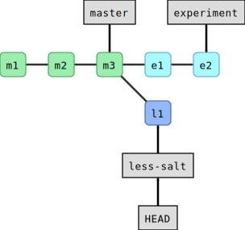
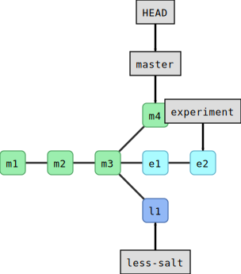
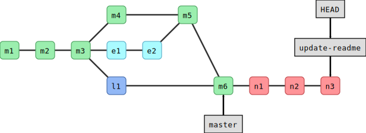

This is a list of all exercises and solutions in this lesson, mainly
as a reference for helpers and instructors. This list is
automatically generated from all of the other pages in the lesson.
Any single teaching event will probably cover only a subset of these,
depending on their interests.
Now first stage and commit each change separately (what happens when we leave out the -m flag?):
$ gitaddingredients.txt
$ gitcommit-m"add half an onion"$ gitaddinstructions.txt
$ gitcommit# <-- we have left out -m "..."
When you leave out the -m flag, Git should open an editor where you can edit
your commit message. This message will be associated and stored with the
changes you made. This message is your chance to explain what you’ve done and
convince others (and your future self) that the changes you made were
justified. Write a message and save and close the file.
When you are done committing the changes, experiment with these commands:
In this exercise, you will create another new branch and few more commits.
We will use this in the next section, to practice
merging. The goal of the exercise is to end up with 3 branches.
Change to the branch master.
Create another branch called less-salt
Note! makes sure you are on master branch when you create the less-salt branch
A safer way would be to explicitly mention to create from the master branch
as shown below:
$ gitbranchless-saltmaster
Where you reduce the amount of salt.
Commit your changes to the less-salt branch.
Use the same commands as we used above.
We now have three branches (in this case HEAD points to less-salt):
$ gitbranch
experiment* less-salt master$ gitgraph
* bf59be6 (HEAD -> less-salt) reduce amount of salt| * 6feb49d (experiment) maybe little bit less cilantro| * 7cf6d8c let us try with some cilantro|/* dd4472c (master) we should not forget to enjoy* 2bb9bb4 add half an onion* 2d79e7e adding ingredients and instructions
Here is a graphical representation of what we have created:

Now switch to master.
Add and commit the following README.md to master:
# Guacamole recipe
Used in teaching Git.
Now you should have this situation:
$ gitgraph
* 40fbb90 (HEAD -> master) draft a readme| * bf59be6 (less-salt) reduce amount of salt|/| * 6feb49d (experiment) maybe little bit less cilantro| * 7cf6d8c let us try with some cilantro|/* dd4472c we should not forget to enjoy* 2bb9bb4 add half an onion* 2d79e7e adding ingredients and instructions

And for comparison this is how it looks on GitHub.
Create a couple of commits on the new branch (for instance edit README.md):

Now switch to master.
Merge the new branch to master.
Examine the result with gitgraph.
Have you expected the result? Discuss what you see.
Solution
You will see that in this case no merge commit was created and Git merged the
two branches by moving (fast-forwarding) the “master” branch (label) three
commits forward.
This was possible since one branch is the ancestor of the other and their
developments did not diverge.
A merge that does not require any merge commit is a fast-forward merge.
(optional) Branch-3: Rebase a branch (instead of merge)
As an alternative to merging branches, one can also rebase branches.
Rebasing means that the new commits are replayed on top of another branch
(instead of creating an explicit merge commit).
Note that rebasing changes history and should not be done on public commits!
Create a new branch, and make a couple of commits on it.
Switch back to master, and make a couple of commits on it.
Inspect the situation with gitgraph.
Now rebase the new branch on top of master by first switching to the new branch, and then gitrebasemaster.
Inspect again the situation with gitgraph. Notice that the commit hashes have changed - think about why!
Solution
You will notice two things:
History is now linear and does not contain merge commits.
All the commit hashes that were on the branch that got rebased, have
changed. This also demonstrates that gitrebase is a command that alters
history. The commit history looks as if the rebased commits were all done
after the master commits.
Both 2 and 3 would do the job. Note that in 2 we first stage the file, and then create the
branch and commit to it. In 1 we create the branch but do not switch to it, while in 4 we
don’t give the -b flag to gitcheckout to create the new branch.
In this exercise, we repeat almost exactly what we did above with a
different ingredient.
Create two branches before making any modifications.
Again modify some ingredient on both branches.
Merge one, merge the other and observe a conflict, resolve the conflict and commit the merge.
What happens if you apply the same modification on both branches?
If you create a branch like-avocados, commit a change, then from this
branch create another banch dislike-avocados, commit again, and try to
merge both branches into master you will not see a conflict. Can you
explain, why it is different this time?
Solution
4: No conflict in this case if the change is the same.
5: No conflict in this case since in Git history one change happened after the other. The two changes
are related and linked by Git history and one is a Git ancestor of the
other. Git will assume that since we applied one change after the other,
we meant this. There is nothing to resolve.
(optional) Conflict-2: Resolve a conflict when rebasing a branch
Create two branches where you anticipate a conflict.
Try to merge them and observe that indeed they conflict.
Abort the merge with gitmerge--abort.
What do you expect will happen if you rebase one branch on top of the
other? Do you anticipate a conflict? Try it out.
Solution
Yes, this will conflict. If it conflicts during a merge, it will also conflict
during rebase but the conflict resolution looks slightly different:
You still need to look for conflict markers but you tell Git that you resolved
a conflict with gitadd and then you continue with gitrebase--continue.
Follow instructions that you get from the Git command line.
Instead of resolving the conflict manually, use a visual tool
(requires installing one of the visual diff tools):
$ gitmergetool
Your current branch is left, the branch you merge is right, result is in the middle.
After you are done, close and commit, gitadd is not needed when using gitmergetool.
If you have not instructed Git to avoid creating backups when using mergetool, then to be on
the safe side there will be additional temporary files created. To remove those you can do
a git clean after the merging.
To view what will be removed:
$ gitclean-n
To remove:
$ gitclean-f
To configure Git to avoid creating backups at all:
Find the code line which contains "Logicerrorindegree_correlation".
Find out when this line was last modified or added. Find the actual commit which modified that line.
Inspect that commit with gitshow.
Create a branch pointing to the past when that commit was created to be
able to browse and use the code as it was back then.
How would you checkout the version of the code right before that line was last modified?
Solution
We use gitgrep:
$ gitgrep"Logic error in degree_correlation"
This gives the output:
networkx/algorithms/threshold.py:print("Logic error in degree_correlation",i,rdi)
Maybe you also want to know the line number:
$ gitgrep-n"Logic error in degree_correlation"
We use gitannotate:
$ gitannotatenetworkx/algorithms/threshold.py
Then search for “Logic error” by typing “/Logic error” followed by Enter.
The last commit that modified it was 90544b4fa (unless that line changed since).
We use gitshow:
$ gitshow90544b4fa
Create a branch pointing to that commit (here we called the branch “past-code”):
$ gitbranchpast-code90544b4fa
This is a compact way to access the first parent of 90544b4fa (here we
called the branch “just-before”):
The motivation for this exercise is to be able to do archaeology with Git on a
source code where the bug is difficult to see visually. Finding the offending
commit is often more than half the debugging.
Background
The script get_pi.py approximates pi using terms of the Nilakantha series. It
should produce 3.14 but it does not. The script broke at some point and
produces 3.57 using the last commit:
$ pythonget_pi.py
3.57
At some point within the 500 first commits, an error was introduced. The only
thing we know is that the first commit worked correctly.
Your task
Clone this repository and use gitbisect to find the commit which
broke the computation
(solution - spoiler alert!).
Once you have found the offending commit, also practice navigating to the last good commit.
Bonus exercise:
Write a script that checks for a correct result and use gitbisectrun to
find the offending commit automatically
(solution - spoiler alert!).
Hints
Finding the first commit:
$ gitlog--oneline|tail-n1
How to navigate to the parent of a commit with hash somehash:
One option to help us create nice logical commits is to stage interactively
with gitcommit--patch:
Make two changes in instructions.txt, at the top and bottom
of the file.
Make sure that they are separated by at least several unmodified lines.
Run gitcommit--patch. Using the keystrokes above, commit one of
the changes.
Do it again for the other change.
When you’re done, inspect the situation with gitlog, gitstatus, gitdiff and gitdiff--staged.
When would this be useful?
Solution
This can be useful if you have several modification in a file (or several
files) but you decide that it would be beneficial to save them as two (or
more) separate commits.
Make an incomplete change to the recipe or a typo in your change, gitadd and gitcommit the incomplete/unsatisfactory change.
Inspect the unsatisfactory but committed change with gitshow. Remember
or write down the commit hash.
Now complete/fix the change but instead of creating a new commit, add the
correction to the previous commit with gitadd, followed by gitcommit--amend. What changed?
Solution
One thing that has changed now is the commit hash. Modifying the previous
commit has changed the history. This is OK to do on commits that other people
don’t depend on yet.
Undoing-3: Destroy our experimentation in this episode
After we have experimented with reverts and amending, let us destroy
all of that and get our repositories to a similar state.
First, we will look at our history (gitlog/gitgraph) and
find the last commit <hash> before our tests.
Then, we will gitreset--hard<hash> to that.
Then, gitgraph again to see what happened.
$ gitlog--oneline
d62ad3e (HEAD -> master) Revert "not sure this is a good idea"f960dd3 not sure this is a good ideadd4472c we should not forget to enjoy2bb9bb4 add half an onion2d79e7e adding ingredients and instructions$ gitreset--harddd4472c
HEAD is now at dd4472c we should not forget to enjoy$ gitlog--oneline
dd4472c (HEAD -> master) we should not forget to enjoy2bb9bb4 add half an onion2d79e7e adding ingredients and instructions
What happens if you accidentally remove a tracked file with gitrm, is it gone forever?
Is it OK to modify commits that nobody has seen yet?
What situations would justify to modify the Git history and possibly remove commits?
Solution
It is not gone forever since gitrm creates a new commit. You can simply revert it!
If you haven’t shared your commits with anyone it can be alright to modify them.
If you have shared your commits with others (e.g. pushed them to GitHub), only extraordinary
conditions would justify modifying history. For example to remove sensitive or secret information.
Check status/diff, stash the change, check status/diff again.
Make a separate, unrelated change which doesn’t touch the same
lines. Commit this change.
Pop off the stash you saved, check status/diff.
Optional: Do the same but stash twice. Also check gitstashlist.
Can you pop the stashes in the opposite order?
Advanced: What happens if stashes conflict with other changes? Make
a change and stash it. Modify the same line or one right above or
below. Pop the stash back. Resolve the conflict. Note there is no
extra commit.
Advanced: what does gitgraph show when you have something
stashed?
Solution
5: Yes you can. With gitstashpop<index> you can decie which stash
index to pop.
6: In this case Git will ask us to resolve the conflict the same way
when resolving conflicts between two branches.
7: It shows an additional commit hash with refs/stash.
{kind=link}